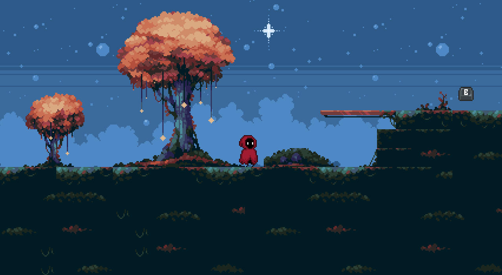

Music Production
Original tracks and audio compositions produced in FL Studio.
Goofy office music for Game Jam
Background
Campfire experimental music
Ambient
A collection of my music compositions, method feeder fishing content, and indie game development.

Original tracks and audio compositions produced in FL Studio.
Background
Ambient
Strategies, tournaments, and sessions centered around method feeder fishing.
Experience and techniques for targeting large carp in this popular destination.
Spring fishing walkthrough and setup.
A custom-built game developed entirely from scratch without the use of a traditional game engine. This project focuses heavily on low-level performance, memory management, and pure C programming mechanics.

You play as a character who lost his keyboard and now needs to pick up lost keys to get to the end. You can dynamically assign your keys in the TAB menu by simply dragging and dropping them. Originally created for the Shawcats Game Jam!